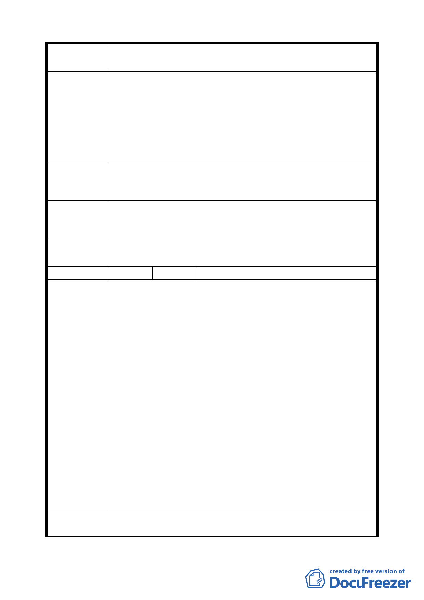

案 名 臺北市文山區都市計畫通盤檢討（主要計畫）案
何以堪，依據理法，也不是公道。
二、陳情人等明瞭權益受損被劃設為保護區，基於現況願意
提出部分土地作為公共設施用地做為公園等利用，試想
一處目前荒廢的平坦土地，基於情理法，應該作一些調
整後，土地有了合理的利用，公共設施用地合理闢建成
一處環境優雅，民眾可以合理利用的綠地，地盡其利，
才是應該捍衛的基本原則。
土地資源沒有大小之分，環境的建構也是由點線面做起，考
建 議 辦 法 量現況將本地區之土地使用分區檢討與調整後，變更為住宅
區。
專 案 小 組 因本案土地依據建設局地質資料庫顯示，靠近住宅區部分為
審 查 結 論 人為棄填土坡，其餘有落石崩塌及向源侵蝕潛感區等環境敏
（94.7.25） 感環境，同意發展局之評估意見，維持原保護區。
委員會議
決議
依專案小組審查結論辦理。
編 號 ２７ 陳情人 國立政治大學（09430082700）
建議位置：政大校門口三角地街廓。
建議理由：
一、本校校地 80％屬山坡地形，不利大規模建築開發，山上
校區已逐漸朝向山水共融校園景觀發展；山下校區校舍
擁擠侷促，故延伸使用本住宅區街廓興建學生宿舍（莊
敬外舍）及校舍（健康中心）、職務宿舍（指南新村），
一旦變更為商業區，將喪失校地使用權（按國資會決議：
商業區之土地不宜做為宿舍使用及國家資產經營管理原
陳情理由
則第七條規定：國立學校不得使用非經依法指定做為學
（主政 1）
校使用之國有土地），對校務發展利用殊為不利。
二、政大是萬興里生活圈的中心，校門口三角地作為商業發
展利用，與塑造大學開放意象有違，宜留作學校發展使
用，變更為學校用地。
三、三角地全街廓面積為.9478 公頃，其中.4585 公頃（佔全
街廓約 75％）已為校地，學校為統合地權，更逐年進行
土地價購作業，而本計畫變更未顧及校方土地利用構
想，又無整體開發或最小開發面積等限制，將造成校園
環境形塑負面因子。
建議辦法
一、三角地街廓內之學校經管土地（政大段四小段 524、526、
528、533、535、536、559、560、564、568、5681、568-
一八